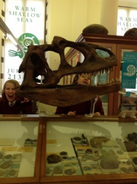
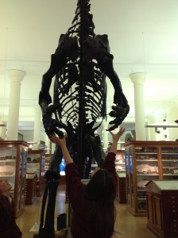
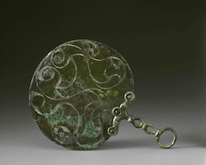

Past and present are co-related. We need to know about the past to make our present and future better. To know about the past and to feel it nothing is better than a museum.
My little museum journey was very interesting. The atmosphere was very harmonious and pleasant. It was inspirational and helped me think in a different manner. Linking rocks and fossils to a poetry in itself is a big challenge which opened up many closed windows of my mind. It made me realise that every rock had a story and every story had a reason, it requires an eye to see it. Some rocks appeared to me like safe vaults which stores secret treasures, thousands of years old. Surprisingly, the rocks and the stones were silent and still yet they were telling so much. My visit was like a conversation with these inanimate objects which animated the past before my eyes.

As I left the museum I felt more wiser and I felt more eager to come back again to this museum which though far, was now just a stone’s throw away from my heart.
Kruti Jethwa, student at Manor School
So Daljit and I have been in the reserve collection at MAA a few times now, opening boxes and generally getting excited at what we find. This is easily the best part of my job. Every time you lift a lid it is a new discovery, that makes a new connection or brings to mind something you may have forgotten you knew.
After our triumph with the long dice, this time Daljit is looking for toe rings to enrich his vision of the sights and sounds of Indian epics. Some of these objects haven’t seen a human face, or a human toe or ankle, for years. I don’t exactly feel like an expert in this, but its amazing what the encounter with these objects brings to mind.
As we look at heavy metal anklets, some mightily solid and some made almost entirely of little bells, like a Bharatnatyam dancer would wear, I remember a story told to me more than ten years ago in Calcutta. It was a ghost story, which isn’t itself unusual in Bengal, about a haunted museum. Although the details are cloudy, the sight of the anklets instantly brings Mrs Majumdar’s voice describing the sound of a woman’s ankets jingling as she walked: “choom-choom, choom-choom”.
Museums aren’t just about seeing things, or even about touching (or please-do-not-touching). That sound, forgotten for a decade, comes back involuntarily – straight into my head and, inevitably, out of my mouth as I try to explain it to Daljit. He looks at me like I’m weird. Not the first time.
It’s still in my head now. Like the curatorial equivalent of an ear-worm. Choom-choom. Choom-choom.
Mark Elliott, MAA

Pointless, pointless, pointless.
‘All is vanity’ someone said; huh, if only.
What is the point of being here if I can’t do what I’m supposed to? My whole life’s purpose – thwarted by idiots who think they know what’s attractive.
I’m not supposed to be this way. I’m blind, or rather, have been blinded. Can’t see anything.
Once upon a time – which is the start of all good stories that I am in – once upon a time, I was loved, valued, trusted even. I’m not saying I was perfect – we all have our limitations, but at least I was looked at. Sounds all wrong, doesn’t it? Here I am, on display in a Museum, moaning about not being noticed. I could be in a box or a drawer, but I was chosen as special. It’s all backwards though. And that’s the real problem – I am backwards.
Once people held me, gazed at me, studied themselves through me. And I showed them who they were.
But just look at what they have done to me! I’m facing the wrong way. No one looks at my face anymore. Visitors stare at my backside, and I’m worried this case makes it look bigger than it really is. They say that museum displays add 20 pounds and 15 years. And I know this is my best side, but my purpose was to show you your best side. And now I can’t. I know that have remarkable features, delicate tracery, a carefully etched design; rings and spirals that loop and dance. But that is not me. I am more than what you see.
All those knowledgeable people: curators, archaeologists, designers, photographers; layers and layers of information, interpretation, thought upon thought upon thought. But they totally missed the point. Don’t they get it? Can’t they see? Of course they can’t. I’m Facing The Wrong Way.
Sarah-Jane Harknett, MAA

As a member of the audience the Threshold Project has been a surprising experience. The great Don Patterson humbly read his poems while standing behind a chair and said his favorite object in the Whipple Museum of the History of Sciences collection is an instrument that focuses on artificial horizons.
A week later at lunchtime I passed a sign in the grass saying NO LANGUAGE GAMES while walking to hear Sean Borodale read from his astounding Bee Journal at the Museum of Classical Archeology.
The next event was at the University Library at teatime with Gillian Clarke and Imtiaz Dharker both fresh from teaching a workshop with young Peterborough students who were so galvanized by the experience that they clapped enthusiastically after each poem.
The following evening was at the Fitzwilliam to hear part of the emotive dramatic poem ‘Pink Mist’ by Owen Sheers after which he mentioned that in years gone by summer sunbathing on the roof of the Fitz was a popular pastime for staff. Finally last Thursday at 6:00pm we gathered for Jo Shapcott’s compelling radio verse play ‘Erebus’ at the Polar Museum in a room with an enormous polar bear skin splayed on the wall next to a fierce sign: CAUTION Do Not Touch This Pelt.
Not only has the poetry been inspiring but the museums have come alive in new ways. All the events are free, there are many more to come, check the Thresholds website regularly.

On Tuesday, Kettle’s Yard hosted a group of young people for the third of our six Thresholds workshops. During the half term, we had two amazing poetry workshops in the house, surrounded by the permanent art collection and everyday objects of Kettle’s Yard’s original owners, Jim and Helen Ede.

Led by Jackie, the group undertook a series of writing tasks, exploring the rooms and the objects through a variety of themes. For example, on the first day, the group responded to the idea of opposites – going into the house and finding a hot/cold, short/tall, rough/smooth combination of their choice and then writing an imagined conversation between the two. On the second day, the theme was ‘appearances can be deceptive’ and included writing a list of things that one would need to do to prepare for the unexpected.

Having composed a number of works, the group are now working with artist Filipa Pereira-Stubbs to transform their poems into installations, returning back to the house to position their re-imagined and re-formed words amongst the collection. This week, the group started the process of transformation by taking the letters of their names as a springboard to explore composition, framing, layouts, and finding connections between shapes and forms. We are really looking forward to seeing where their ideas go over the coming weeks.
Sarah Campbell, Education Officer at Kettle’s Yard